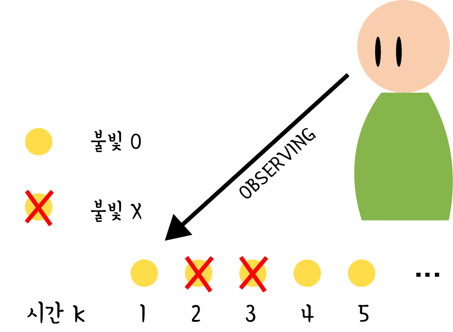

HGF 모델은 어떻게 agent가 움직이는 연속적인 불확실한 양 (i.e., random variable) x에 대해 학습하는 지를 기술하는 것을 목표로 한다.
x의 움직임을 기술하는 하나의 일반적인 방법은 Gaussian random work이다. x(k)∼N(x(k−1),ϑ),k=1,2,...
여기서 k는 시간 index이고 x(k−1)은 Gaussian distribution의 평균, ϑ은 Gaussian distribution의 분산이다. 이 식에서 x의 volatility (단위 시간당 time series의 분산)는 양의 상수 ϑ에 의해 결정된다.
그러나 valatility가 상수라고 가정할 특별한 이유는 없다. 즉, x의 valatility도 시간에 따라 변할 수 있다.
따라서 volatility의 변화를 기술하기 위하여 ϑ를 두번째 random variable x2의 양의 함수로 나타내기로 하자. 이 때 두 번째 random variable을 x2로 하였기 때문에 기존의 x를 x1으로 나타내기로 한다.
x1(k)∼N(x1(k−1),f(x2)),k=1,2,...
이 때, x2도 움직이는 연속적인 불확실한 양이므로 Gaussian 분포를 나타낸다고 생각할 수 있고 따라서 x1과 마찬가지로 x2(k)∼N(x2(k−1),ϑ),k=1,2,...와 같이 나타낼 수 있다. 하지만 x2의 volatility도 상수라고 가정할 특별한 이유가 없고 따라서 어떤 새로운 random variable x3의 양의 함수라 생각할 수 있다.
이런식으로 계속 자연수 n에 대하여 계속하여 변수들의 위계적 level을 증가시켜 나갈 수 있다.
각 level i에 대하여 다음 가장 높은 level i+1과의 연결은 양의 함수 fi(xi+1)로 주어지고, 이는 random walk의 분산 혹은 step size를 나타낸다. xi(k)∼N(xi(k−1),fi(xi+1)),i=1,...,n−1
가장 높은 level에서는 fn대신 ϑ로 식을 나타낼 수 있다. 가장 높은 단계라는 것은 volatility의 움직임을 나타내는 더 높은 위계의 변수가 없다는 것이고 이는 volatility가 상수라는 것을 의미하기 때문이다. xn(k)∼N(xn(k−1),ϑ),ϑ>0
비슷한 방식으로 inputs (observations) u(k)가 Gaussian 분포를 띈다고 가정하면 다음과 같이 나타낼 수 있다. u(k)∼N(x1(k),π^u−1)여기서 π^u−1는 perceptual uncertainty를 의미한다. agent가 x1을 지각할 때 노이즈 등으로 지각과정이 방해를 받으면 π^u−1이 증가한다.
이 때, fi는 어떻게 정의할 수 있을까? fi를 정의하는 유연하고 간단한 접근은 가능한 모든 양의 fi를 허용하는 것이다. 이 때, 함수의 형태를 간단히 하기 위하여 fi를 테일러 급수를 이용하여 1차 다항함수의 꼴로 근사시킨다. 하지만 fi은 양의 함수여야 하기 때문에 fi를 바로 근사시킬 수 없다.
대신 다음의 성질을 만족하는 gi(x)를 정의하여 gi(x)를 근사시키도록 한다. fi(x)>0∀x⇒∃gi:fi(x)=exp(gi(x))∀x
테일러 급수를 이용하여 gi(x)를 근사시키면 gi(x)=gi(a)+gi′(a)(x−a)+O(2)=logfi(x)=logfi(a)+fi(a)fi′(a)(x−a)+O(2)=fi(a)fi′(a)x+logfi(a)−afi(a)fi′(a)+O(2)
여기서 fi(a)fi′(a)를 κi, logfi(a)−afi(a)fi′(a)를 ωi로 두면 logfi(x)=κix+ωi+O(2)⇒f(x)≈exp(κix+ωi)
나중에 다시 살펴보겠지만 이런 형식의 level간 연결은 간단한 one-step 업데이트 식을 유도하고 해석하는데 중요한 역할을 한다. 또한 1장에서 언급하였듯이 κ,ω가 agent마다 다르기 때문에, 이 모델(HGF)이 inter-individual variability를 나타낼 수 있다.
간단히 이 모델을 해석하기 위하여 financial data를 가정해보자.
u(k) : 특정한 security의 관찰된 반환값
x(1) : u(k)에서 observation noise π^u−1가 제거된 실제 반환값
ω : x(1)의 volatility에서 시간에 관계없이 불변하는 부분
κx2 : x(1)의 volatility에서 시간에 따라 변화하는 부분
이러한 패턴은 위계의 가장 상위부분에 해당할 때까지 반복될 수 있다.
Example (불빛이 반짝이는 상태)
위에서 기술한 상황을 실제 예시에 적용시켜보자.

x1
그림과 같이 한 agent가 불빛의 상태를 관찰한다고 가정하자. 불빛은 특정한 시간 간격마다 한 번씩 나타나거나/나타나지 않는다.(x1)
input
이 때, agent는 불빛이 나타나면 불빛이 보인다고 지각하고, 불빛이 나타나지 않으면 불빛이 보이지 않는다고 지각한다. 즉, π^u−1=0인 상황을 가정한다. noise 등으로 인해 잘못 지각할 가능성이 없기 때문에 나타나는 불빛의 상태를 올바르게 지각할 수 있다. (input u = x1) (이렇게 perceptual uncertainty가 없는 상태를 deterministic하다고 한다)
x2
agent는 이 불빛이 반짝이는 상태를 보고 불빛의 경향성이 어떻게 되는지를 알고 싶어한다. 이 불빛의 경향성을 x2라고 하면 x2는 x1=1일 확률(불빛이 나타날 확률)의 unbounded real parameter로 볼 수 있다. 즉, 불빛이 켜질 경향성을 나타낸다. x2=0은 x1=0일 확률과 x1=1일 확률이 같음을 의미하고 x2→∞은 x1=1이 될 확률이 1로 다가간다는 것을 의미한다. 반대로 x2→−∞는 x1=0이 될 확률이 1로 다가간다는 것을 나타낸다.
이를 수식으로 정리하면, P(x1=1)=s(x2) (s= sigmoid(softmax)) 이 된다.
이때, x2는 Gaussian random walk로 시간에 따라 변화한다고 가정한다. 즉, 시간 k에서 x2의 확률은 시간 k−1에서의 x2를 평균으로 하는 정규분포를 그린다고 본다. 이를 수식으로 나타내면 다음과 같다.
P(x2(k)∣x2(k−1),x3(k))=N(x2(k);x2(k−1),exp(κx3(k)+ω))
여기서 exp(κx3(k)+ω) 는 위에서 level간 연결을 정의하는 fi를 유도하는 방법에 의해 정의된 식이다.
x3
불빛이 반짝이는 경향성(x2)의 uncertainty가 시간에 따라 일정하다는 보장이 없을 때, x3라는 변수가 필요하다. x3는 x2의 uncertainty에 영향을 주는 변수이다. 이 불빛 예시에서 x3는 불빛이 얼마나 빨리 변화하는지에 대한 agent의 믿음을 나타낸다. 이 때, x3는 top level이므로 다음과 같은 정규분포식으로 나타낼 수 있다. P(x3(k)∣x3(k−1),ϑ)=N(x3(k);x3(k−1),ϑ)
이 전체 과정을 그림으로 도식화 할 수 있다.
Update equation
Update equation은 input 하나하나가 들어올 때마다 각 level의 사후확률이 어떻게 달라지는 지를 나타낸다. 즉, 새로운 input이 들어온 후, 각 level의 사후확률의 평균과 분산을 업데이트 해나가는 과정을 나타낸다. 이 update equation은 model inversion을 통해 얻어진다. inversion은 data로 부터 모델 parameter을 얻어내는 과정을 뜻한다. 이 모델에서는 mean field approximation과 posterior energy function을 이차 다항식으로 근사하는 과정을 통해 parameter을 얻는다. 자세한 inversion 과정은 3장에서 설명하도록 하겠다. 대신 여기서는 inversion 결과만 살펴보기로 한다.
Binary outcome을 가지는 three-level HGF의 경우 (위의 example과 같은 경우) second-level의 update equation은 다음과 같다. (μ2(k),σ2(k) 은 각각 x2 사후확률의 평균과 분산(uncertainty)이다) μ2(k)=μ2(k−1)+σ2(k)δ1(k)(1) σ2(k)=σ2^(k)1+σ1^(k)1(2)
이때, μ^1(k)=defs(μ2(k−1))(3) δ1(k)=defμ1(k)−μ^1(k)(4) σ^1(k)=defμ^1(k)(1−μ^1(k))(5) σ^2(k)=defσ2(k−1)+eκμ3(k−1)+ω(6)
여기서 hat notation은 parameter의 예측값을 의미한다. 따라서 μ^1(k)은 input u(k)를 보기 전 μ1(k)의 예측값을 나타낸다. 또한, $\hat{\sigma }_i^{(k)}은 이 예측의 uncertainty(분산)를 의미한다.
이에 따라, 위의 식 (3) (μ^1(k)=defs(μ2(k−1)))은 μ1(k)를 k번째 input을 보기 전 μ2(k−1)로 예측할 수 있음을 뜻한다. 이 때 예측의 오차는 δ1(k)=defμ1(k)−μ^1(k)로 나타나진다.
비슷한 방법으로 third-level의 update equation을 구할 수 있다. (μ3(k),σ3(k) 은 각각 x3 사후확률의 평균과 분산(uncertainty)이다) μ3(k)=μ3(k−1)+σ3(k)2κw2(k)δ2(k)(8) σ3(k)=σ3^(k)1+2κ2w2(k)(w2(k)+r2(k)δ2(k))1(9)
이 때, σ^3(k)=defσ3(k−1)+ϑ(10) w2(k)=defσ2(k−1)+eκμ3(k−1)+ωeκμ3(k−1)+ω(11) r2(k)=defσ2(k−1)+eκμ3(k−1)+ωeκμ3(k−1)+ω−σ2(k−1)(12) δ2(k)=defσ2(k−1)+eκμ3(k−1)+ωσ2(k)+(μ2(k)−μ2(k−1))2−1(13)
Uncertainty
HGF는 크게 3가지의 uncertainty를 가정한다.
perceptual uncertainty
perceptual uncertainty는 stimulus category x1과 sensory input u를 연결한다. sensory input의 모호하거나 노이즈에 영향을 받는 정도를 perceptual uncertainty로 나타낼 수 있다.
x2의 uncertainty σ^2(k)에 관한 식 (cf. 6) σ^2(k)=defσ2(k−1)+eκμ3(k−1)+ω은 σ2(k−1) 항과 eκμ3(k−1)+ω항으로 구분된다. 이 때 σ2(k−1)은 informational uncertainty를 eκμ3(k−1)+ω은 environmental uncertainty를 의미한다.
informational uncertainty
상태(state)가 일정할 때에도 sensory information의 양이 상태를 예측하기에 너무 적을 수 있다. 이에 따라 발생하는 uncertainty를 뜻한다.
environmental uncertainty
informational uncertainty와는 달리 시간에 따라 상태(state)가 변함으로써 발생하는 uncertainty를 의미한다.
RL에 기반한 update equation의 해석
μ2,μ3의 update equation의 형태는 RL model(Rescorla-Wagner 모델)의 형태와 유사하다.
먼저, RL model을 요약하면 다음과 같다. prediction(k)=prediction(k−1)+learningrate×predictionerror μ2의 update equation을 다시 적으면 prediction(k)μ2(k)=prediction(k−1)μ2(k−1)+learningrateσ2(k)predictionerror(μ1(k)−s(μ2(k−1)))(?)
식에서 (μ1(k)−s(μ2(k−1)))는 첫번째 level에서의 prediction error를 의미한다. 여기서 μ1(k)은 input u(k)를 관찰하고 난 후 x1에 대한 기대를 의미한다. 또한 μ^1(k)=s(μ2(k−1))은 input u(k)을 받기 전 x1에 대한 예측을 뜻한다.
식에서 σ2(k)은 RL에서 (시간에 따라 변하는) learning rate과 같은 역할을 한다. σ2(k)가 x2의 사후분포의 너비를 의미하고, 따라서 x2에 대한 uncertainty를 뜻하기 때문에 μ2에 대한 업데이트 (Δμ2)가 σ2(k)에 비례하는 것은 합당하다. (agent가 무엇을 아는지에 대한 확신이 없다면 새로운 정보에 더 많은 영향을 받을 것이다. →Δμ2가 커질 것이다)
σ2(k)에 관한 식 (cf. Eq.2) σ2(k)=σ2^(k)1+σ1^(k)1=σ2(k−1)+eκμ3(k−1)+ω1+σ1^(k)1(?)
은 uncertainty가 두번째 level에서의 informational uncertainty (σ2(k−1)), environmental uncertainty (eκμ3(k−1)+ω), 첫번째 level에서 예측의 uncertainty(σ1^(k)) 의 3가지 uncertainty에 영향을 받음을 보여준다.
식을 보면 environmental uncertainty (eκμ3(k−1)+ω)의 증가가 σ2(k)를 바로 전 값 σ2(k−1)보다 증가시키고 이 때, 첫번째 level에서 예측의 uncertainty(σ1^(k)) 증가가 σ2(k)의 증가를 방해한다. 이는 식 (?)에서 예측의 uncertainty가 클 수록 prediction error가 의미하는 것이 적어야 하기 때문에 합당하다.
prediction(k)μ3(k)=prediction(k−1)μ3(k−1)+learningrateσ3(k)2κσ2(k−1)+eκμ3(k−1)+ωeκμ3(k−1)+ω×predictionerror⎝⎜⎛σ2(k−1)+eκμ3(k−1)+ωσ2(k)+(μ2(k)−μ2(k−1))2−1⎠⎟⎞(?) μ3에 대한 업데이트 식 (Eq. ?)도 μ2에 대한 업데이트 식 (Eq. ?)과 유사한 구조를 가진다.
prediction error
식 (13)의 δ2(k)가 prediction error를 나타낸다. δ2(k)가 양수라는 것은 δ2(k)=defσ2(k−1)+eκμ3(k−1)+ωσ2(k)+(μ2(k)−μ2(k−1))2−1>0 σ2(k−1)+eκμ3(k−1)+ωσ2(k)+(μ2(k)−μ2(k−1))2>1 σ2(k)+(μ2(k)−μ2(k−1))2>σ2(k−1)+eκμ3(k−1)+ω
input u(k)에 대한 반응으로 두번째 level(μ2,σ2) 을 업데이트 할 때 x3를 과소추정함을 의미하고, 반대로 음수라는 것은 σ2(k)+(μ2(k)−μ2(k−1))2<σ2(k−1)+eκμ3(k−1)+ω x3를 과대추정함을 의미한다.
위의 uncertainty란에서 언급하였듯이 x2의 uncertainty는 informational uncertainty(σ2(k−1)) 와 environmental uncertainty(eκμ3(k−1)+ω)로 구분할 수 있다. input u(k)를 보기 전에 x2의 total uncertainty는 σ^2(k)=σ2(k−1)+eκμ3(k−1)+ω이다. input u(k)을 본 후 total uncertainty는 σ2(k)+(μ2(k)−μ2(k−1))2로 σ2(k)는 식 (2)에 의해 업데이트 되고 σ^2(k)식에서 eκμ3(k−1)+ω는 (μ2(k)−μ2(k−1))2로 대체된다. 따라서 input u(k)을 본 후 total uncertainty가 증가된다면 δ2(k)가 양, 감소된다면 δ2(k)는 음이 된다. 그리고 input u(k)를 보기 전 후 total uncertainty의 비가 prediction error라고 본다.
learning rate σ3(k)2κw2(k)=σ3(k)2κσ2(k−1)+eκμ3(k−1)+ωeκμ3(k−1)+ω(?)
두번째 level에서와 같이 learning rate는 x3의 사후분포의 분산(uncertainty)에 비례한다. 그러나 이 때, learning rate는 κ와 weighting factor w2k)에도 비례한다. κ는 'Parameter 역할’에서 다시 언급하겠지만 바로 전 level의 Gaussian random walk의 형태를 결정하고 전후 level을 연결시킨다. w2(k)는 x2의 total uncertainty(informational uncertainty+environmental uncertainty)에 대한 environmental uncertainty 의 비율을 의미한다. environmental uncertainty에 비해 informational uncertainty가 클수록 이 값은 0에 가까워진다. 이는 x2의 prediction error가 agent가 x2에 대한 자신의 예측에 확신 할수록 의미가 있어져야 하기 때문에 합당하다고 볼 수 있다.
σ3(k) σ3(k)=σ3^(k)1+2κ2w2(k)(w2(k)+r2(k)δ2(k))1(9) w2(k)=defσ2(k−1)+eκμ3(k−1)+ωeκμ3(k−1)+ω(11) r2(k)=defσ2(k−1)+eκμ3(k−1)+ωeκμ3(k−1)+ω−σ2(k−1)(12) δ2(k)=defσ2(k−1)+eκμ3(k−1)+ωσ2(k)+(μ2(k)−μ2(k−1))2−1(13) x3의 uncertainty(σ3(k))도 RL 모델로 설명가능하다. 우선 식 (11), (12)을 살펴보면 r2(k)는 w2(k)를 affine 변환한 결과임을 알 수 있다. r2(k)=2w2(k)−1
식 (9)을 살펴보면 κ가 증가하면 σ3(k)가 감소함을 알 수 있다. 즉, 두 번째, 세 번째 level의 강한 연결이 세번째 level의 uncertainty를 줄인다. 또한 w_2^{(k)}가 감소하면 σ3(k)는 증가하는데 이는 x2의 informational uncertainty가 environmental uncertainty에 비하여 상대적으로 크면 x3의 uncertainty가 증가함을 의미한다.
식에서 r2(k)δ2(k)는 x2의 environmental uncertainty가 informational uncertainty에 비하여 상대적으로 크고 input u(k)를 본 후 x2의 total uncertainty가 증가하면 x3의 learning rate이 증가됨을 뜻한다. 반대로 informational uncertainty가 environmental uncertainty에 비하여 상대적으로 크고 input u(k)를 본 후 x2의 total uncertainty가 감소하여도 x3의 learning rate이 증가된다. 즉 agent가 자신의 예측에 확신이 없을 때는 input u(k)을 본 후 x2의 total uncertainty가 증가하면 x3를 더 잘 업데이트하지만 x2의 total uncertainty가 감소하면 x3를 잘 업데이트 하지 못한다. 반대로 agent가 자신의 예측에 확신이 있을 때에는 input u(k)을 본 후 x2의 total uncertainty가 증가하면 x3를 잘 업데이트하지 못하지만 x2의 total uncertainty가 감소하면 x3를 잘 업데이트 한다.
Parameter 역할
P(xn−1(k)∣xn−1(k−1),xn(k))=N(xn−1(k);xn−1(k−1),exp(κxn(k)+ω)) P(xn(k)∣xn(k−1),ϑ)=N(xn(k);xn(k−1),ϑ)
에서 각 parameter의 역할을 살펴보자. n−1,n는 level을 나타낸다.
ϑ : 마지막 level xn의 분산(uncertainty). 이 값이 감소하면 xn은 더 안정적일 것으로 기대된다. xn−1에서의 learning rate은 ϑ의 변화에 직접적인 영향을 받지는 않지만 높은 volatility가 learning rate의 증가에 영향을 미치지 못하기 때문에 간접적으로 영향을 받는다. μ2(k)=μ2(k−1)+σ2(k)δ1(k)(1) σ2(k)=σ2^(k)1+σ1^(k)1(2)
즉 식 (1)에 바로 영향을 미치지는 않지만 식 (2)에 영향을 줌으로써 학습에 영향을 미친다.
ω : x(n−1)의 volatility에서 시간에 관계없이 불변하는 부분. 바로 전 level(n−1)의 Gaussian random walk의 형태를 결정한다. 이 값이 감소하면 xn−1의 learning rate이 감소한다. 또한 식 (8), (11), (13)에서 볼 수 있듯이 μ3(k)=μ3(k−1)+σ3(k)2κw2(k)δ2(k)(8) w2(k)=defσ2(k−1)+eκμ3(k−1)+ωeκμ3(k−1)+ω(11) δ2(k)=defσ2(k−1)+eκμ3(k−1)+ωσ2(k)+(μ2(k)−μ2(k−1))2−1(13)
agent는 그 전 level(n−1)의 변화를 통해서만 xn의 변화를 추정할 수 있기 때문에 xn의 learning rate도 감소시킨다. ω의 감소는 prediction error가 있음에도 불구하고 환경에 대한 agent 자신의 믿음을 조금만 업데이트 시킨다는 의미로 새로운 정보에 집중을 적게 함을 의미한다.
κ : x(n−1)의 volatility에서 시간에 따라 변화하는 부분. 바로 전 level(n−1)의 Gaussian random walk의 형태를 결정하고 전후(n−1,n) level을 연결시킨다. κ의 감소는 xn에 대한 uncertainty가 클 때에도 μn에 대한 작은 변화를 야기한다. ϑ가 감소하는 경우와 마찬가지로 xn−1에서의 learning rate은 κ의 변화에 직접적인 영향을 받지는 않지만 높은 volatility가 learning rate의 증가에 영향을 미치지 못하기 때문에 간접적으로 영향을 받는다. μ3(k)=μ3(k−1)+σ3(k)2κw2(k)δ2(k)(8) σ3(k)=σ3^(k)1+2κ2w2(k)(w2(k)+r2(k)δ2(k))1(9)
식 (9)에서 볼 수 있듯이 κ의 감소는 σ3(k)을 증가시킨다. 그러나 식 (8)에 따라서 κ의 감소는 학습(Δμ3)을 줄인다. 따라서 volatility가 증가함에도 학습은 감소하는 역설적인 효과가 나타난다.